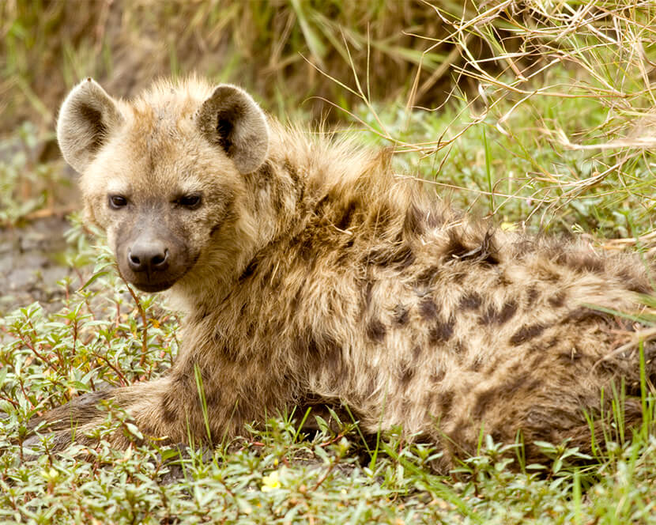

Sırtlan, Afrika’nın savanlarında ve Asya’nın bazı bölgelerinde yaşayan, güçlü çene yapısı ve sosyal sürü davranışlarıyla tanınan bir etçil memelidir; kürkü genellikle kahverengi, sarımsı veya benekli tonlarda olup kamuflaj sağlar; ortalama 40–80 kg ağırlığa ulaşabilir ve doğada 12–20 yıl kadar yaşayabilir; sürü halinde yaşayan bu tür, karmaşık sosyal yapılarıyla dikkat çeker ve avlanmada işbirliği yaparak zebralar, antiloplar ve daha küçük memelileri etkisiz hale getirir, ayrıca leşçil özellikleri sayesinde doğadaki dengeyi korur; güçlü çeneleri kemikleri bile kırabilecek kapasitededir; kültürel açıdan ise tarih boyunca kurnazlık, dayanıklılık ve doğanın vahşi düzeninin sembolü olarak görülmüştür.